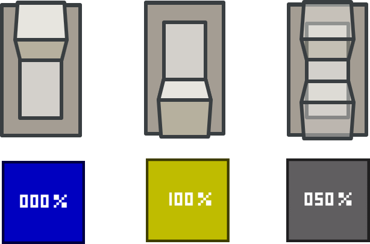
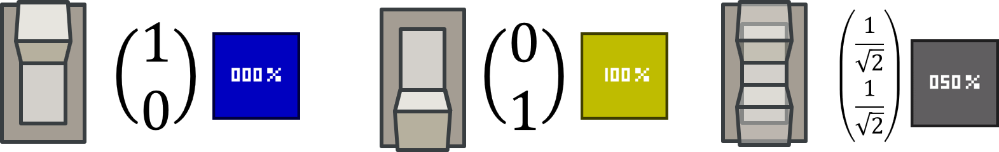

Qubit Block
The qubit block is the most important block in the mod, as all other blocks connect to it. The qubit block represents one quantum switch, which can be on, off or a combination of the two. The number on the block shows the probability that it will be on when measured (rounded to the nearest 10%).

Maths
There is a lot more to a qubit’s state than just it’s probability however. Each qubit on its own is stored with two numbers. (It gets even more complicated when qubits interact with each other.)

If you square the top number, you get the probability that when measured, this qubit will be on. If you square the bottom number, you get the probability that when measured, this qubit will be off.
These numbers can also be negative or complex. (If it is complex, the magnitude squared is the probability.)